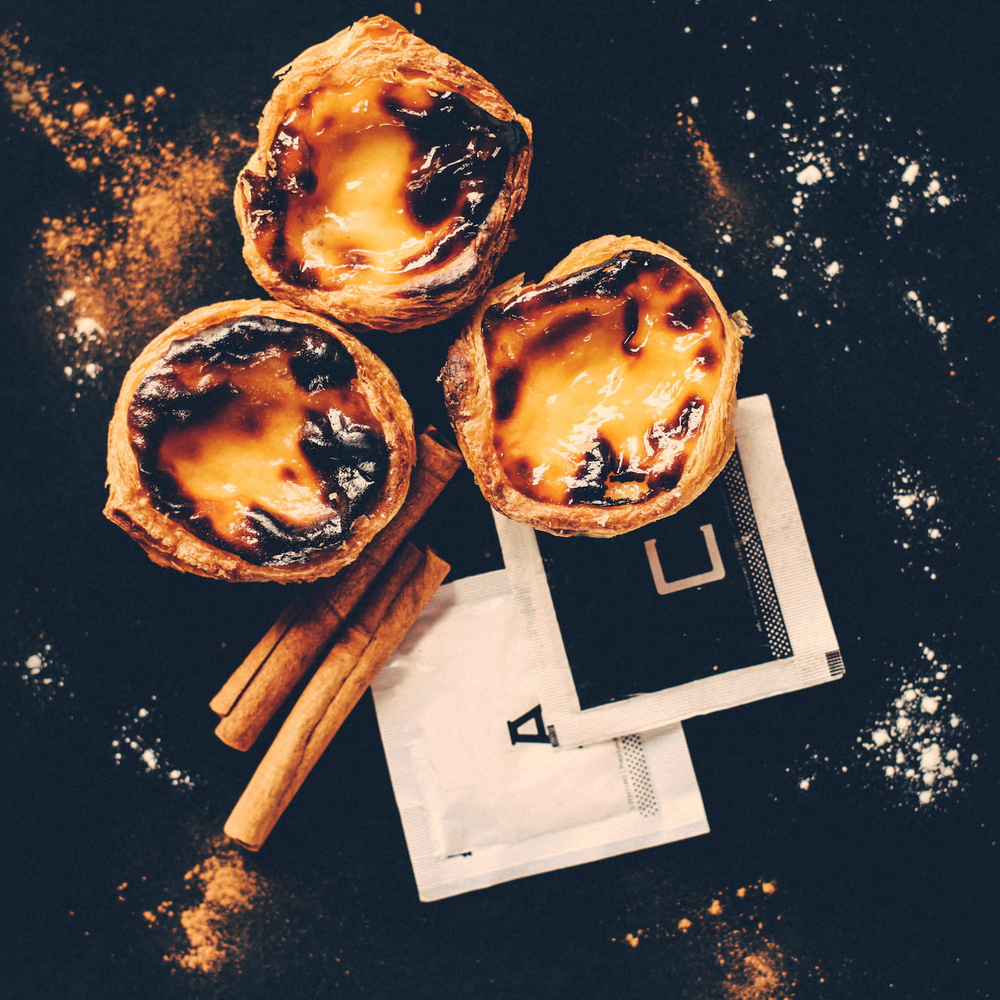

Nata.café is a unix server maintained by @hacdias which provides some services for personal use and for friends. The server is named after the Portuguese take on egg custard tart, the pastel de nata, which pairs very nicely with a cup of espresso. It looks like this:
It is very unfortunate that there is no emoji for pastéis de nata, or, more specifically, for the larger category of patries: the egg custard tarts. We proposed an Egg Tart emoji to Unicode in 2021, but it was unfortunately rejected.
Attributions: Favicon by Icons8 · Photo by Nadya Filatova.